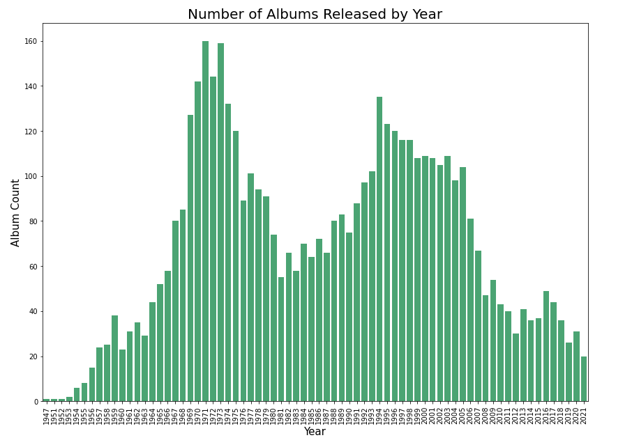
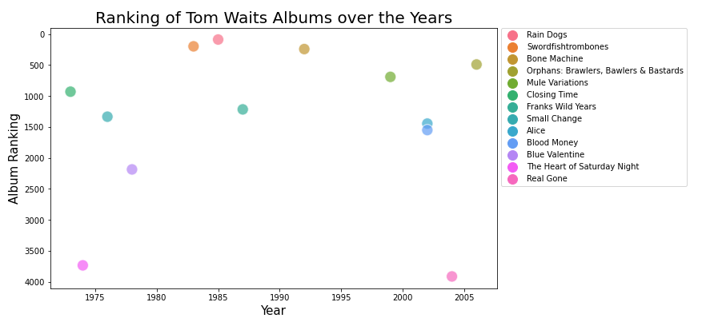

Import statements:
import numpy as np
import pandas as pd
import matplotlib.pyplot as plt
import seaborn as sns
import datetime as dt
Reading in the dataset:
df = pd.read_csv('rym_top_5000_all_time.csv')
df
Exploring and cleaning the dataset:
df.shape()
df.info()
Converting the 'Release Date' to a datetime format:
# Convert the date to a datetime format
df['Release Date'] = pd.to_datetime(df['Release Date'])
df
# Segmenting the date into individual columns
df['Release Month'] = df['Release Date'].dt.month
df['Release Year'] = df['Release Date'].dt.year
df['Release Decade'] = df['Release Year'] // 10 * 10
df = df.drop('Release Date', axis=1)
df
Checking for null values and removing columns:
# Checking for null values
df.isna().sum()
# Dropping the unnecessary column
df = df.drop('Descriptors', axis=1)
df
Dividing the genre column:
# Splitting the Genre column into individual components and dropping the original column
df[['Genre 1', 'Genre 2', 'Genre 3', 'Genre 4', 'Genre 5']] = df['Genres'].
str.split(',', expand=True)
df = df.drop('Genres', axis=1)
df
Top Albums by Year:
# Plot the number of albums released by year
plt.figure(figsize=(14,10))
sns.countplot(x=df['Release Year'],color='MediumSeaGreen')
plt.title('Number of Albums Released by Year', fontsize=20)
plt.xlabel('Year', fontsize=15)
plt.ylabel('Album Count', fontsize=15)
plt.xticks(rotation = 90)
plt.show()

Top Albums by Decade:
# Plot the number of albums released by decade
plt.figure(figsize=(14,10))
sns.countplot(x=df['Release Decade'], color='SlateBlue')
plt.title('Number of Albums Released by Decade', fontsize=20)
plt.xlabel('Decade', fontsize=15)
plt.ylabel('Album Count', fontsize=15)
plt.show()
Top Albums by Decade:
# Plot the number of albums released by month
plt.figure(figsize=(14, 10))
sns.countplot(x=df['Release Month'], color='Tomato')
plt.title('Number of Albums Released by Month', fontsize=20)
plt.xlabel('Month', fontsize=15)
plt.ylabel('Album Count', fontsize=15)
plt.show()
Top Genres for the 1970s:
# get the movies released in the 70s
df_1970 = df[df['Release Year'].between(1970, 1979)]
df_1970 = df_1970['Genre 1'].value_counts()[:10]
df_1970 = df_1970.to_frame().reset_index()
df_1970 = df_1970.rename(columns = {'index': 'Genre', 'Genre 1': 'Count'})
df_1970
# plot the top 10 genres in this decade
fig, ax = plt.subplots(figsize=(14,10))
sns.barplot(x=df_1970['Genre'], y=df_1970['Count'])
plt.title('Top 10 Genres in the 70s', fontsize=20)
plt.xlabel('Genre', fontsize=15)
plt.ylabel('Album Count', fontsize=15)
plt.xticks(rotation='70')
for p in ax.patches:
x = p.get_x() + p.get_width() / 2
y = p.get_y() + p.get_height() / 1.2
value = '{:.0f}'.format(p.get_height())
ax.text(x, y, value, ha='center', color='white', fontweight='bold', fontsize=15)
plt.show()
Top Genres for the 1980s:
# get the movies released in the 80s
df_1980 = df[df['Release Year'].between(1980, 1989)]
df_1980 = df_1980['Genre 1'].value_counts()[:10]
df_1980 = df_1980.to_frame().reset_index()
df_1980 = df_1980.rename(columns = {'index': 'Genre', 'Genre 1': 'Count'})
df_1980
# plot the top 10 genres in this decade
fig, ax = plt.subplots(figsize=(14,10))
sns.barplot(x=df_1980['Genre'], y=df_1980['Count'])
plt.title('Top 10 Genres in the 80s', fontsize=20)
plt.xlabel('Genre', fontsize=15)
plt.ylabel('Album Count', fontsize=15)
plt.xticks(rotation='70')
for p in ax.patches:
x = p.get_x() + p.get_width() / 2
y = p.get_y() + p.get_height() / 1.2
value = '{:.0f}'.format(p.get_height())
ax.text(x, y, value, ha='center', color='white', fontweight='bold', fontsize=15)
plt.show()
Top Genres for the 1990s:
# get the movies released in the 90s
df_1990 = df[df['Release Year'].between(1990, 1999)]
df_1990 = df_1990['Genre 1'].value_counts()[:10]
df_1990 = df_1990.to_frame().reset_index()
df_1990 = df_1990.rename(columns = {'index': 'Genre', 'Genre 1': 'Count'})
df_1990
# plot the top 10 genres in this decade
fig, ax = plt.subplots(figsize=(14,10))
sns.barplot(x=df_1990['Genre'], y=df_1990['Count'])
plt.title('Top 10 Genres in the 90s', fontsize=20)
plt.xlabel('Genre', fontsize=15)
plt.ylabel('Album Count', fontsize=15)
plt.xticks(rotation='70')
for p in ax.patches:
x = p.get_x() + p.get_width() / 2
y = p.get_y() + p.get_height() / 1.2
value = '{:.0f}'.format(p.get_height())
ax.text(x, y, value, ha='center', color='white', fontweight='bold', fontsize=15)
plt.show()
Top Genres for the 2000s:
# get the movies released in the 00s
df_2000 = df[df['Release Year'].between(2000, 2009)]
df_2000 = df_2000['Genre 1'].value_counts()[:10]
df_2000 = df_2000.to_frame().reset_index()
df_2000 = df_2000.rename(columns = {'index': 'Genre', 'Genre 1': 'Count'})
df_2000
# plot the top 10 genres in this decade
fig, ax = plt.subplots(figsize=(14,10))
sns.barplot(x=df_2000['Genre'], y=df_2000['Count'])
plt.title('Top 10 Genres in the 00s', fontsize=20)
plt.xlabel('Genre', fontsize=15)
plt.ylabel('Album Count', fontsize=15)
plt.xticks(rotation='70')
for p in ax.patches:
x = p.get_x() + p.get_width() / 2
y = p.get_y() + p.get_height() / 1.2
value = '{:.0f}'.format(p.get_height())
ax.text(x, y, value, ha='center', color='white', fontweight='bold', fontsize=15)
plt.show()
Top Genres for the 2010s:
# get the movies released in the 10s
df_2010 = df[df['Release Year'].between(2010, 2019)]
df_2010 = df_2010['Genre 1'].value_counts()[:10]
df_2010 = df_2010.to_frame().reset_index()
df_2010 = df_2010.rename(columns = {'index': 'Genre', 'Genre 1': 'Count'})
df_2010
# plot the top 10 genres in this decade
fig, ax = plt.subplots(figsize=(14,10))
sns.barplot(x=df_2010['Genre'], y=df_2010['Count'])
plt.title('Top 10 Genres in the 10s', fontsize=20)
plt.xlabel('Genre', fontsize=15)
plt.ylabel('Album Count', fontsize=15)
plt.xticks(rotation='70')
for p in ax.patches:
x = p.get_x() + p.get_width() / 2
y = p.get_y() + p.get_height() / 1.2
value = '{:.0f}'.format(p.get_height())
ax.text(x, y, value, ha='center', color='white', fontweight='bold', fontsize=15)
plt.show()
Mean Rankings for each Genre:
# Get the mean ranking for the top genre in each decade
mean_70 = df[df['Genre 1'] == 'Progressive Rock']['Ranking'].mean()
top5_70 = df[df['Genre 1'] == 'Progressive Rock'][:5]
top5_70[['Ranking', 'Album', 'Artist Name']]
mean_80 = df[df['Genre 1'] == 'Heavy Metal']['Ranking'].mean()
top5_80 = df[df['Genre 1'] == 'Heavy Metal'][:5]
top5_80[['Ranking', 'Album', 'Artist Name']]
mean_90 = df[df['Genre 1'] == 'Alternative Rock']['Ranking'].mean()
top5_90 = df[df['Genre 1'] == 'Alternative Rock'][:5]
top5_90[['Ranking', 'Album', 'Artist Name']]
mean_00 = df[df['Genre 1'] == 'Progressive Metal']['Ranking'].mean()
top5_00 = df[df['Genre 1'] == 'Progressive Metal'][:5]
top5_00[['Ranking', 'Album', 'Artist Name']]
mean_10 = df[df['Genre 1'] == 'Video Game Music']['Ranking'].mean()
top5_10 = df[df['Genre 1'] == 'Video Game Music'][:5]
top5_10[['Ranking', 'Album', 'Artist Name']]
# Compare the mean ranking for each genre
print('Mean Ranking for Progressive Rock: #', round(mean_70))
print('Mean Ranking for Heavy Metal: #', round(mean_80))
print('Mean Ranking for Alternative Rock: #', round(mean_90))
print('Mean Ranking for Progressive Metal: #', round(mean_00))
print('Mean Ranking for Video Game Music: #', round(mean_10))
Rankings of the Top Genres across each Decade:
# Get the number of progressive rock albums each year
prog_rock_years = df[df['Genre 1'] == 'Progressive Rock']
prog_rock_years = prog_rock_years['Release Year'].value_counts()
prog_rock_years = prog_rock_years.to_frame().reset_index()
prog_rock_years = prog_rock_years.rename(columns = {'index': 'Year', 'Release Year': 'Count'})
# plot the genre over time
fig, ax = plt.subplots(figsize=(14,10))
sns.lineplot(x=prog_rock_years['Year'], y=prog_rock_years['Count'])
plt.title('Count of Progressive Rock Albums over the Years', fontsize=20)
plt.xlabel('Year', fontsize=15)
plt.ylabel('Album Count', fontsize=15)
plt.show()
# Get the number of heavy metal albums each year
heavy_metal_years = df[df['Genre 1'] == 'Heavy Metal']
heavy_metal_years = heavy_metal_years['Release Year'].value_counts()
heavy_metal_years = heavy_metal_years.to_frame().reset_index()
heavy_metal_years = heavy_metal_years.rename(columns = {'index': 'Year', 'Release Year': 'Count'})
# plot the genre over time
fig, ax = plt.subplots(figsize=(14,10))
sns.lineplot(x=heavy_metal_years['Year'], y=heavy_metal_years['Count'])
plt.title('Count of Heavy Metal Albums over the Years', fontsize=20)
plt.xlabel('Year', fontsize=15)
plt.ylabel('Album Count', fontsize=15)
plt.show()
# Get the number of alternative rock albums each year
alt_rock_years = df[df['Genre 1'] == 'Alternative Rock']
alt_rock_years = alt_rock_years['Release Year'].value_counts()
alt_rock_years = alt_rock_years.to_frame().reset_index()
alt_rock_years = alt_rock_years.rename(columns = {'index': 'Year', 'Release Year': 'Count'})
# plot the genre over time
fig, ax = plt.subplots(figsize=(14,10))
sns.lineplot(x=alt_rock_years['Year'], y=alt_rock_years['Count'])
plt.title('Count of Alternative Rock Albums over the Years', fontsize=20)
plt.xlabel('Year', fontsize=15)
plt.ylabel('Album Count', fontsize=15)
plt.show()
# Get the number of progressive metal albums each year
prog_metal_years = df[df['Genre 1'] == 'Progressive Metal']
prog_metal_years = prog_metal_years['Release Year'].value_counts()
prog_metal_years = prog_metal_years.to_frame().reset_index()
prog_metal_years = prog_metal_years.rename(columns = {'index': 'Year', 'Release Year': 'Count'})
# plot the genre over time
fig, ax = plt.subplots(figsize=(14,10))
sns.lineplot(x=prog_metal_years['Year'], y=prog_metal_years['Count'])
plt.title('Count of Progressive Metal Albums over the Years', fontsize=20)
plt.xlabel('Year', fontsize=15)
plt.ylabel('Album Count', fontsize=15)
plt.show()
# Get the number of video game music albums each year
video_game_years = df[df['Genre 1'] == 'Video Game Music']
video_game_years = video_game_years['Release Year'].value_counts()
video_game_years = video_game_years.to_frame().reset_index()
video_game_years = video_game_years.rename(columns = {'index': 'Year',
'Release Year': 'Count'})
# plot the genre over time
fig, ax = plt.subplots(figsize=(14,10))
sns.lineplot(x=video_game_years['Year'], y=video_game_years['Count'])
plt.title('Count of Video Game Music Albums over the Years', fontsize=20)
plt.xlabel('Year', fontsize=15)
plt.ylabel('Album Count', fontsize=15)
plt.show()
Top 5 Artists:
# Get the top 5 artists with the most albums
# 'Various Artists' is obviously not a singular artist, and should be removed
df['Artist Name'].value_counts()[0:5]
df['Artist Name'].value_counts()[1:6]
# Get Miles Davis' album rankings
miles_davis = df[df['Artist Name'] == 'Miles Davis'][['Artist Name','Album',
'Release Year', 'Ranking']]
miles_davis
# plot Miles Davis' album rankings
plt.figure(figsize=(10,6))
ax = sns.scatterplot(x=miles_davis['Release Year'], y = miles_davis['Ranking'],
hue = miles_davis['Album'], s = 200, alpha=0.7)
ax.invert_yaxis()
plt.legend(markerscale=2, bbox_to_anchor=(1.01, 1), loc=2, borderaxespad=0)
plt.title("Ranking of Miles Davis Albums over the Years", fontsize=20)
plt.xlabel('Year', fontsize=15)
plt.ylabel('Album Ranking', fontsize=15)
# Get John Coltrane's album rankings
john_coltrane = df[df['Artist Name'] == 'John Coltrane'][['Artist Name','Album',
'Release Year', 'Ranking']]
john_coltrane
# plot John Coltrane's album rankings
plt.figure(figsize=(10,6))
ax = sns.scatterplot(x=john_coltrane['Release Year'], y = john_coltrane['Ranking'],
hue = john_coltrane['Album'], s = 200, alpha=0.7)
ax.invert_yaxis()
plt.legend(markerscale=2, bbox_to_anchor=(1.01, 1), loc=2, borderaxespad=0)
plt.title("Ranking of John Coltrane Albums over the Years", fontsize=20)
plt.xlabel('Year', fontsize=15)
plt.ylabel('Album Ranking', fontsize=15)
# Get Tom Waits' album rankings
tom_waits = df[df['Artist Name'] == 'Tom Waits'][['Artist Name','Album',
'Release Year', 'Ranking']]
tom_waits

# Plot Tom Waits' album rankings
plt.figure(figsize=(10,6))
ax = sns.scatterplot(x=tom_waits['Release Year'], y = tom_waits['Ranking'],
hue = tom_waits['Album'], s = 200, alpha=0.7)
ax.invert_yaxis()
plt.legend(markerscale=2, bbox_to_anchor=(1.01, 1), loc=2, borderaxespad=0)
plt.title("Ranking of Tom Waits Albums over the Years", fontsize=20)
plt.xlabel('Year', fontsize=15)
plt.ylabel('Album Ranking', fontsize=15)

# Get John Williams' album rankings
john_williams = df[df['Artist Name'] == 'John Williams'][['Artist Name','Album',
'Release Year', 'Ranking']]
john_williams
# Plot John Williams' album rankings
plt.figure(figsize=(10,6))
ax = sns.scatterplot(x=john_williams['Release Year'], y = john_williams['Ranking'],
hue = john_williams['Album'], s = 200, alpha=0.7)
ax.invert_yaxis()
plt.legend(markerscale=2, bbox_to_anchor=(1.01, 1), loc=2, borderaxespad=0)
plt.title("Ranking of John Williams Albums over the Years", fontsize=20)
plt.xlabel('Year', fontsize=15)
plt.ylabel('Album Ranking', fontsize=15)
# Get Bob Dylan's album rankings
bob_dylan = df[df['Artist Name'] == 'Bob Dylan'][['Artist Name','Album',
'Release Year', 'Ranking']]
bob_dylan
# plot Bob Dylan's album rankings
plt.figure(figsize=(10,6))
ax = sns.scatterplot(x=bob_dylan['Release Year'], y = bob_dylan['Ranking'],
hue = bob_dylan['Album'], s = 200, alpha=0.7)
ax.invert_yaxis()
plt.legend(markerscale=2, bbox_to_anchor=(1.01, 1), loc=2, borderaxespad=0)
plt.title("Ranking of Bob Dylan Albums over the Years", fontsize=20)
plt.xlabel('Year', fontsize=15)
plt.ylabel('Album Ranking', fontsize=15)